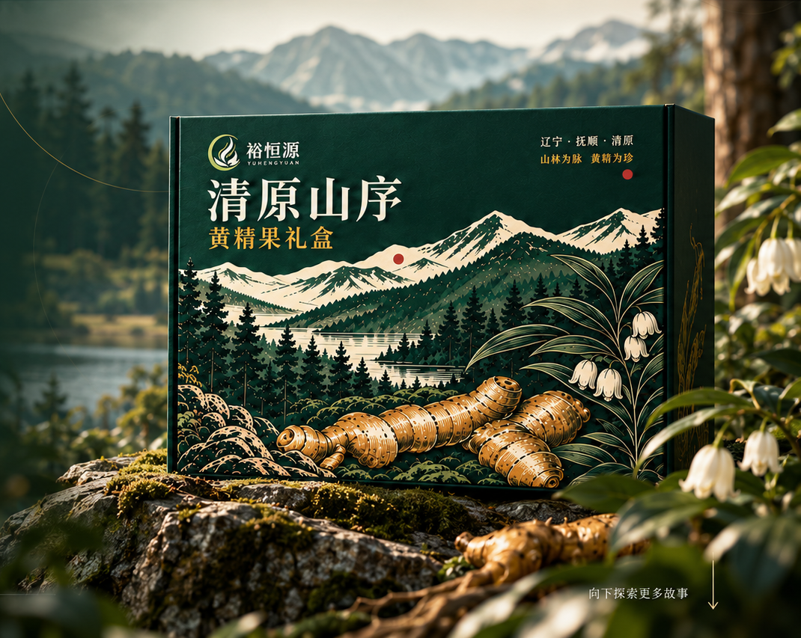
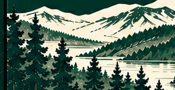
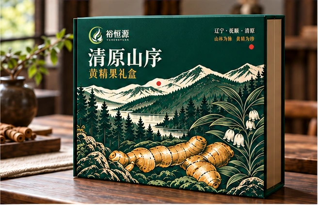
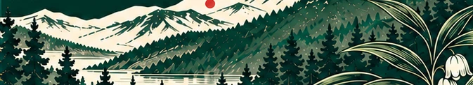
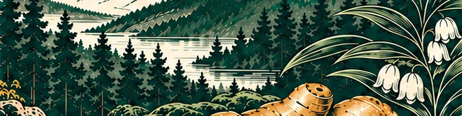
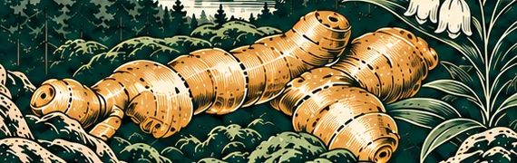
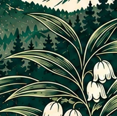
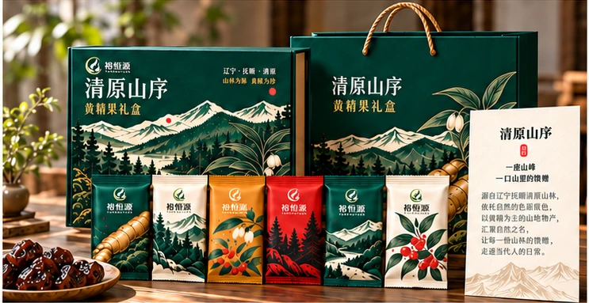

01开盒体验书型礼盒与六袋内托
故事起点
从山林出发，
让一份地方风物被看见。
清原的山脉、林木与植物意象，成为包装故事的底色。黄精根茎作为视觉主角，与层叠山影一起被重新组织成版画语言。
不是把风景装进盒子，而是把山林的气息，带进一份相聚与分享。



向下探索更多故事↓扫码互动 · 智能包装体验
从山林到指尖，让一份好物连接更大的土地与故事。
故事起点
清原的山脉、林木与植物意象，成为包装故事的底色。黄精根茎作为视觉主角，与层叠山影一起被重新组织成版画语言。
不是把风景装进盒子，而是把山林的气息，带进一份相聚与分享。
包装平面系统 · 02
外盒、手提袋、故事卡与六款独立小袋共享同一套山林图形语言。展开细节图，看看包装如何从一张主画面延伸成完整礼赠系统。
从外盒到独立小袋
沿用现有六袋系列的顺序与图形，不改变包装设计。
六袋独立小袋 · 按用户提供的包装平面图保留原有顺序、颜色与构图。
成品应用展示 · 03
从开盒仪式、产品组合到家庭与节日场景，让包装从一件作品，成为一份可分享的心意。
03生活中的清原山序把山林的味道，带进不同的日常场景。
独立小袋，方便携带与分享。
茶席相伴，把山林气息融入生活。
适用于节日相赠与亲友分享。
让礼盒里的山林故事继续被阅读。
版面中的二维码为设计展示图形；包装实际印刷请使用已核验的正式二维码。
视觉基因展示 · 04
山林视觉基因
把山脉轮廓、林海层次、黄精根茎与花叶意象，转译成礼盒上的图形、色彩与版面节奏。
清原山林意象 · 数字视觉演绎

以层叠山形建立画面起伏。

用林木深浅组织视觉纵深。

让产品主体成为画面焦点。

以植物细节补足山林气息。
山脉、林木、根茎与花叶，组成同一套包装图形语言。
材质、表面工艺与结构细节以方案图及后续打样确认。
企业影像展示 · 05
从山林生长，到一盒黄精果。
走进黄精生长、林下环境、采挖与加工影像，了解包装故事所呈现的植物与产品意象。
企业公开影像中的黄精生长与山林作业画面。
企业公开影像中的原料与加工画面。
影像素材整理自“裕恒源黄精”企业公开内容或企业授权素材，用于展示黄精生长、产地与产品故事。
数字互动内容用于品牌故事与包装体验展示；涉及产地、加工与企业事实的信息以企业授权素材为准。视频不代表本批次产品溯源。
清原山序 · 绿色与落地
让山林好礼，更轻、更实用、更易落地。
从材料方向、结构推敲到生产适配，把包装构想拆解成可继续评估的设计环节。
本页呈现设计策略与方案图示；具体材料、环保表现与量产参数以企业确认及打样结果为准。

包装系统图 · 结构与材质信息
以提供的包装方案图为依据；纸材、油墨与表面处理信息需结合最终生产文件核验。
设计评估方向
对照包装方案确认纸材、触感与印刷工艺。
检查礼盒开合、六袋排列与保护空间。
结合企业生产条件和运输需求复核结构。
清原山序 · 数字互动体验
让包装不止被看见，还能被打开、被讲述、被走进。
从包装二维码进入数字故事，观看黄精企业影像、了解包装设计，并可继续开启 AR 山林互动。
开始 AR 体验数字山林画面为视觉演绎；实际交互效果以设备、浏览器与现场光线为准。
交互入口
循着包装上的二维码，自主选择想继续了解的内容。
品牌故事 · 08
从一盒山林故事，
继续认识裕恒源。
清原山序以清原山林故事为包装主线，将山脉、林木、黄精植物与礼赠设计融入一盒黄精果礼盒。页面内容以已提供的包装设计与企业影像为依据。
官方购买
微信扫一扫进入「裕恒源黄精」微信小店
长按图片尝试识别，或保存后使用微信扫一扫。微信环境下可尝试长按识别小店码。

实际商品、价格及服务信息以微信小店页面为准。
本页面中的数字互动内容用于品牌与包装故事展示。
从山林故事，到真实产品。
一盒黄精，把清原带到日常。